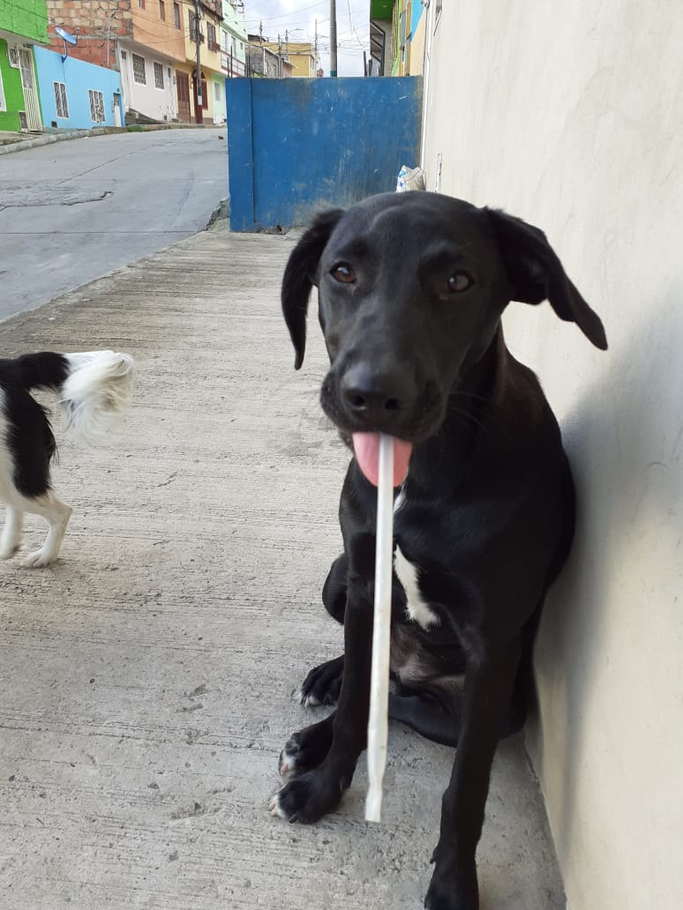

Peludos felizmente adoptados




Tener una mascota como compañera de vida es una gran decisión, pues conlleva una responsabilidad que hay que asumir con madurez; has de cubrir sus necesidades, tanto físicas como emocionales… Sin embargo, tras un tiempo juntos, pronto descubres nuevas situaciones que no esperabas, pero que te llenan de felicidad y vida cada día.
Cada día un número vergonzoso de perros, gatos y demás animales son abandonados a su suerte por sus dueños. Desgraciadamente eso no podemos evitarlo pero sí podemos hacer algo para contrarrestarlo: Adoptar en vez de comprar.
Antes de adoptar un animal hay que pensárselo mucho, hay que conocer bien que es lo que buscamos y que le podemos ofrecer, ya sea tiempo, espacio, etc. La adopción, se puede realizar a través de refugios, protectoras, asociaciones de animales, etc. Esta puede llevar consigo un gasto, con el que se paga el microchip y la esterilización del animal, normalmente más barato que si lo lleváramos nosotros a hacer a un veterinario.
Al adoptar un animal estamos salvándole la vida a él y al nuevo animal que ocupará su lugar y haciendo de él el animal más feliz del mundo, algo que el animal nos va a agradecer eternamente y cuanto mayor sea su edad más amor nos va a demostrar en agradecimiento.